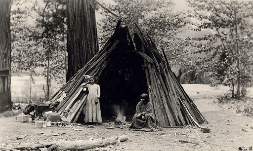
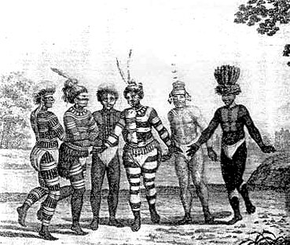
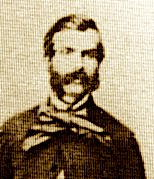
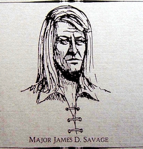
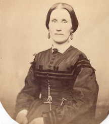
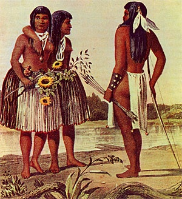
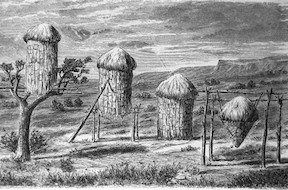

THE MIWOKS.
indigenous people in the area of Columbia, California
1850 - Present

© Columbia State Historic Park.
Sierra Miwok Ochum.

1850s
The Miwok Tribe
Summary and Definition
The Miwok tribe were a California tribe of Native American Indians who were hunter-gathers and fishers. They lived in north-central California, from the Pacific coast to the west slope of the Sierra Nevada Mountains. The Miwok tribe are highly distinctive due to the tattoos and paint they used to adorn their bodies.
(Most Miwok people also wore ear and nose ornaments as well as face and body paint, that was similar to the Mojave tribe. They also practiced tattooing.
Their striking face and body paint made use of black and white coloring often applied in horizontal lines, as can be seen by the above picture. The white paint color was obtained from chalk deposits and charcoal was easy to make resulting in distinctive white and black face and body painting.)
The lifestyle of the Miwok tribe varied according to the natural resources of their location. The name Miwok derives from their word 'Miwuk' meaning person. They were neighbors to the Wappo and Washoe tribes, with whom they frequently traded. Their tribal lands were subject to various incursions by the Spanish, Mexicans and finally the Americans. The people watched as their tribal lands fell to the Spanish who wanted to convert the tribe to Christianity and enslave them, the Mexicans who forced the people to work on their farms and the Americans who moved west along the California Trail who were joined by the Gold Rush settlers. The Miwok people were decimated by the diseases brought by the different European cultures and subjected to atrocities. Following the short-lived Mariposa Indian War (1850) those who survived were forced on to various reservations (Ranchorias).

The body painted Miwok - 1700

William Perkins Journal of life at Sonora, 1849-1852
1 February 1849
Mexicans were being harassed (one man robbed and killed) by local Indians so some Mexicans had formed a �Posse� to hunt the killers down. They came into Sonora and asked for volunteers to assist them. Perkins joined the party. After many miles and a few days they �found the Rancheria (north of Columbia) of a hundred well built huts in the shape of beehives. In the centre(sic) was the council house�.about fifty feet in circumference.
��The hill was covered with men, women and children, the latter running like deer, while the men with their bows and arrows held their ground; but the first volley of rifle bullets was too much for them. The affair did not last more than five minutes. I did not fire my rifle more than three times.�
The people �are about four feet high, with very large heads and huge shocks of hair, coarse and black. Their limbs are very small; legs are no larger than the arm of a moderate size man. Their feet are ridiculously small, and their hands and fingers long and exceedingly thin and slender. They go entirely naked even in the severe region in which they reside, and subsist on roots, acorns, berries, and the small edible part of the pine cone�.�
(NOTE: The men did hunt and fish)
(Excerpt�s from his book �Three Years in California - William Perkins journal of life at Sonora, 1849-1852�>
Not Columbia but
Savage's Old Camp

(1817-1852)
1850 June 5 -
An interesting portion of the history of these camps is the account of a fracas between the Indians and whites, which was brought about in the following way: a Texan whose name was Rose (Bose), was one day at the Indian camp, when words were exchanged between him and the chief, " Lotario," ending in the fatal stabbing of the latter. The Indians present immediately killed Rose (Bose), by shooting him with arrows. The whites in the neighborhood rushed to arms, and without inquiring into the cause of the trouble, attacked the natives with firearms, killing two and wounding several. This fracas resulted in the destruction of all relations between the whites and the aborigines for a considerable time. The red men were finally pacified, however, through the exertions of Mr. Savage.
When the Doctor was coming to the (Big Oak) Flat from a gulch beyond, he witnessed the above scene of blood, at the place called Savage's Old Camp. A small tribe of Indians were encamped there, and on that day the chief, Lotario, and a few chosen warriors, becoming a little more fuddled than would be considered genteel in the higher walks of life, concluded to have a row with some Americans encamped there. Words with them not being quite potent enough, bows and arrows were called into requisition, and the melee became general, and as he came from work he saw the whole tribe of warriors, squaws and pappooses, taking French leave of their heretofore' quiet abode, and making tracks for parts unknown amid an accompaniment of howls, shrieks and lamentations, that would have done no discredit to a pack of hungry wolves. When coming in he saw the Chief and several others lying dead, and another badly wounded. One unfortunate American, named Bose, was so badly wounded with arrows that he died in about an hour. (History of Tuolumne County � 1882 - Official History of Tuolumne County)

Clementine Allen Houghton - 1861
November 5th, 1853 Saturday
Took tea with Mrs. Smith�s very hospitable people but quite old fashioned. Went to see the Diggers in their wigwams: I have built better houses in the woods to play in than these were never had any idea or a race of human beings so degraded as these, it seems impossible for them to be happy in degraded filthy condition, and yet they seem happy: if there is anything we have reason to thank God for it is that we had our birth and being in an enlightened land: and had Christian parents to instruct us: Went to prayer meeting at Springfield it seemed really like the Roman Catholics, for each one knelt down and prayed in secret as he entered the house: I think it more for show than anything else: it may be wrong for me to have such feelings: but I cannot help it. A. Marston came here today to board.
April 7th, 1854 Friday
A fine cool day, have been over to Gold Springs enjoyed it much, found the folks well and perfectly contented, found a great variety of flowers on the way, and it was my good fortune to run into some poison oak, and get poisoned. A party went over to see the Indians this afternoon. Went to church this morning Mr. Harmon preached.
Digger Indians term indiscriminately applied to many Native Americans of the central plateau region of W North America, including tribes in Oregon, Idaho, Utah, Arizona, Nevada, and central California. The name is supposedly derived from the fact that they dug roots for food. It has no ethnological significance and was a term of opprobrium.
A wigwam or wickiup is a domed single room dwelling. The term wickiup is generally used to label these kinds of dwellings. Wigwam is usually applied to these structures in the American Northeast. The use of these terms by non-Native Americans is somewhat arbitrary and can refer to many distinct types of Native American structures regardless of location or cultural group. These structures are formed with a frame of arched poles, most often wooden, which are covered with some sort of roofing material. Details of construction varies with the culture and local availability of materials. Some of the roofing materials used include grass, brush, bark, rushes, mats, reeds, hides or cloth.
from A Columbia Diary, 1853-1858 by Clementine Brainard.

Summer Costumes of Miwok - 1850

Acorn granaries of the Miwok

Page created for the public by
Floyd D. P. Øydegaard.
Email contact:
fdpoyde3 (at) Yahoo (dot) com
A WORK IN PROGRESS,
created for the visitors to the Columbia State Historic park.
© Columbia State Historic Park & Floyd D. P. Øydegaard.